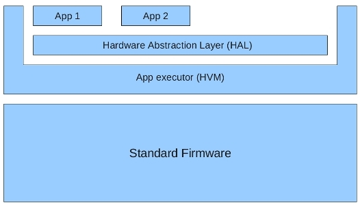

HVM - apps for industrial devices
- Download Java apps to micro-controller platforms
- Extend fixed firmware behavior with in-the-field loadable apps
- Open up embedded platforms
- Let the costumer finish the programming
The HVM (Hardware near Virtual Machine) is a lean Java VM for embedded systems. It
- Integrates with existing C-based development and execution environments
- Requires 20 kB ROM and 500 bytes RAM
- Launching and debugging in Eclipse
- Supports Java application download and version update without requiring a full firmware upgrade

The HVM supports the following features specifically targeted at embedded systems:
- Intelligent class linking. Only those parts of the used libraries that may be accessed at runtime are linked with the application.
- SDK independence. The HVM works with standard Java libraries such as the latest SDK from Oracle, but it will also work with domain specific libraries or SDKs from other vendors.
- OS independence. The HVM is designed to run without an OS (bare bone), but may be easily integrated with other OSs such as e.g. Linux and Windows.
- Simple build procedure. Building HVM applications can be done from the command line on all hosts where a C compiler for the target is available. The build procedure is basically "gcc -nostdlib *.c"
- HVM supports Hardware Objects and 1st level interrupt handling in Java. The Java language has been seamlessly extended to allow for direct memory access (including access to device registers and interrupt control registers). Everything the embedded developer is accustomed to be able to do in C/assembler, is also possible in HVM.
- HVM is ROM/RAM aware. HVM is careful to place read-only data in read-only data segments to minimize the use of RAM. The interpreter itself occupies about 30 kB of ROM and the default Java heap size is 4 kB.
- Hybrid execution style. Any subset of reachable methods can be marked for compilation. Marked methods will be compiled into C code by an ahead-of-time compiler. Unmarked methods will be interpreted. The selection of which methods to compile is supported through an Eclipse view, where the developer can browse reachable methods. Compiled methods execute significantly faster than interpreted methods, but they take up more ROM memory. More elaborate evaluation results available in the evaluation document.
See the tutorial for detailed information about how to run the HVM on a particular target.